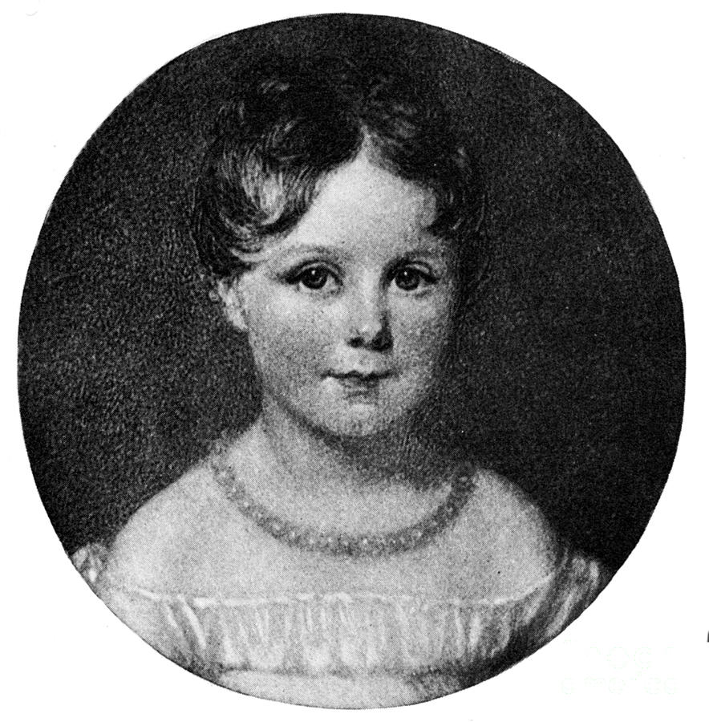
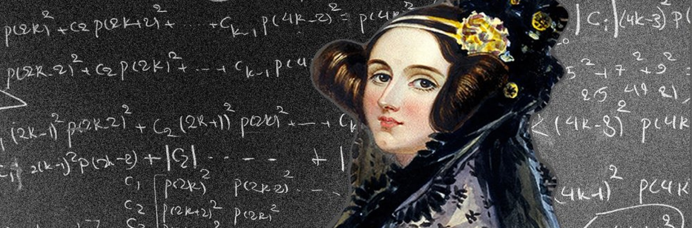
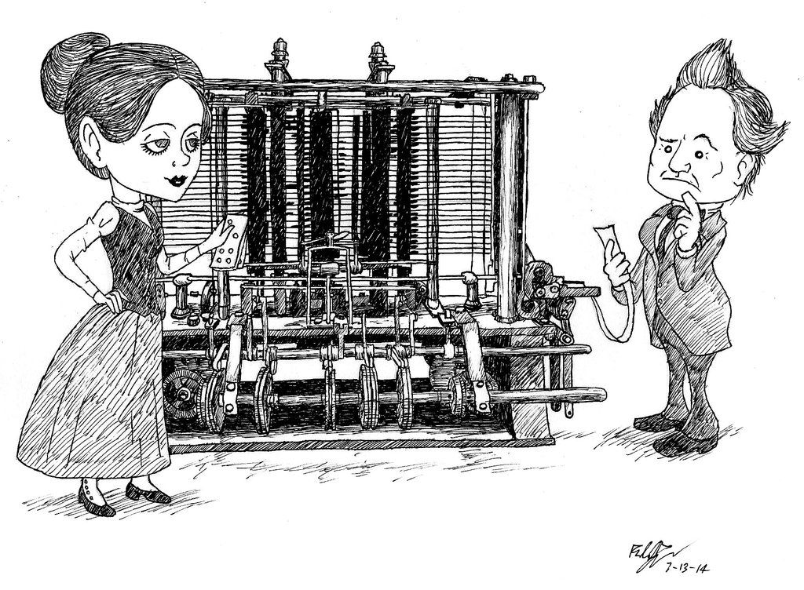
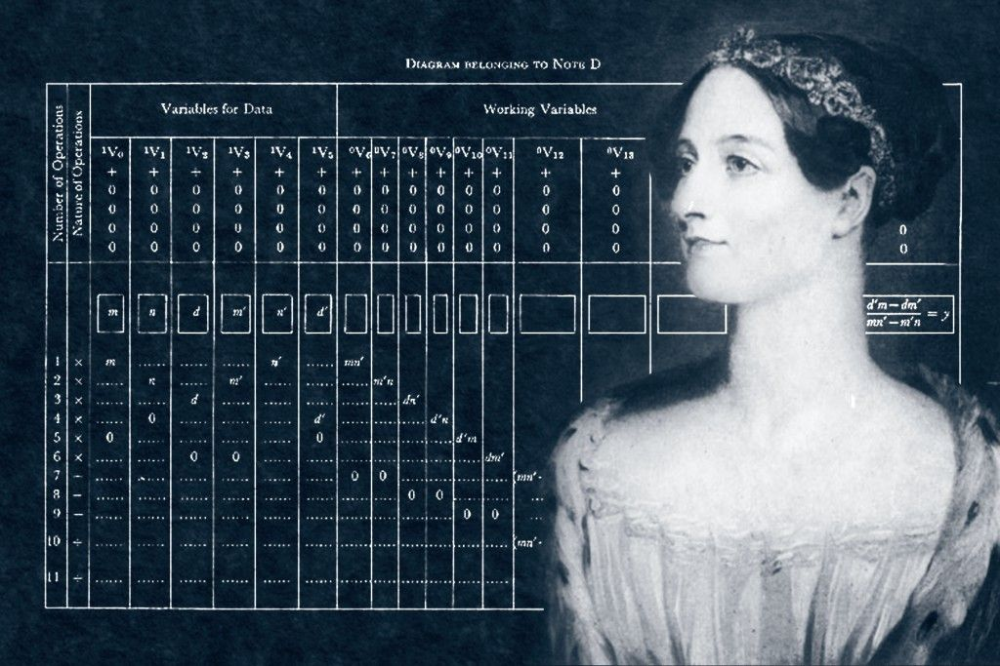
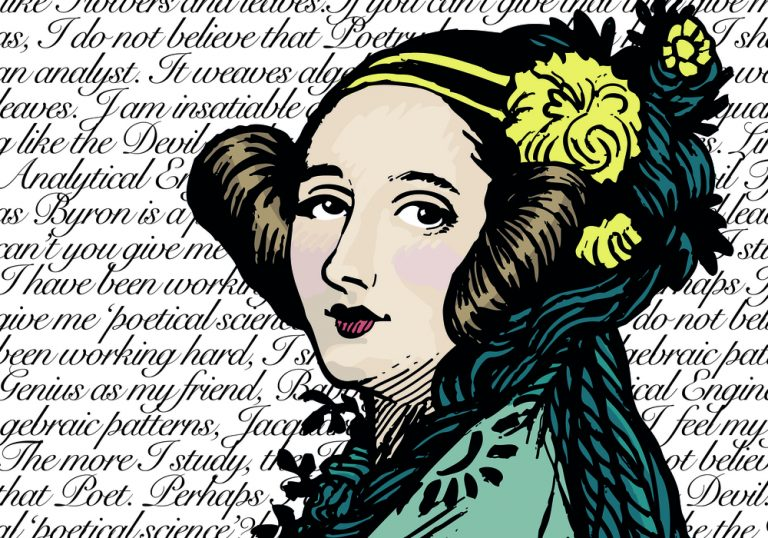
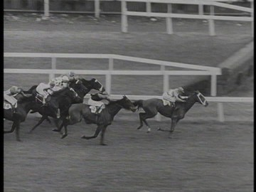

The Child Prodigy
Daughter of the famous romantic poet Lord Byron, Ada Lovelace was a child prodigy. Brilliant at maths, she read numbers like most people read words. A hundred years before the dawn of digital technology, Ada was working out how to build a machine that could operate like a human mind, this machine is what we now call the computer!
About Ada
Augusta Ada King, Countess of Lovelace was born December 10, 1815 and lived until November 27, 1852. was an English mathematician and writer, chiefly known for her work on Charles Babbage's proposed mechanical general-purpose computer, the Analytical Engine. She was the first to recognise that the machine had applications beyond pure calculation, and published the first algorithm intended to be carried out by such a machine.
When Lovelace met Babbage
Lovelace first met Charles Babbage in June 1833 when she was a teenager. Her mathematical talents led her to a long working relationship and friendship with fellow British mathematician Charles Babbage, who is known as "the father of computers". She was in particular interested in Babbage's work on the Analytical Engine.
The first computer program
Between 1842 and 1843, Ada translated an article by Italian military engineer Luigi Menabrea on the calculating engine, supplementing it with an elaborate set of notes, simply called Notes. These notes contain what many consider to be the first computer program—that is, an algorithm designed to be carried out by a machine.
Poetical Science
Lovelace's notes are important in the early history of computers. She also developed a vision of the capability of computers to go beyond mere calculating or number-crunching, while many others, including Babbage himself, focused only on those capabilities. Her mindset of "poetical science" led her to ask questions about the Analytical Engine (as shown in her notes) examining how individuals and society relate to technology as a collaborative tool.
Joel admires...
... her graceful poetic verse.
... and her ability to pick the winning horse.
